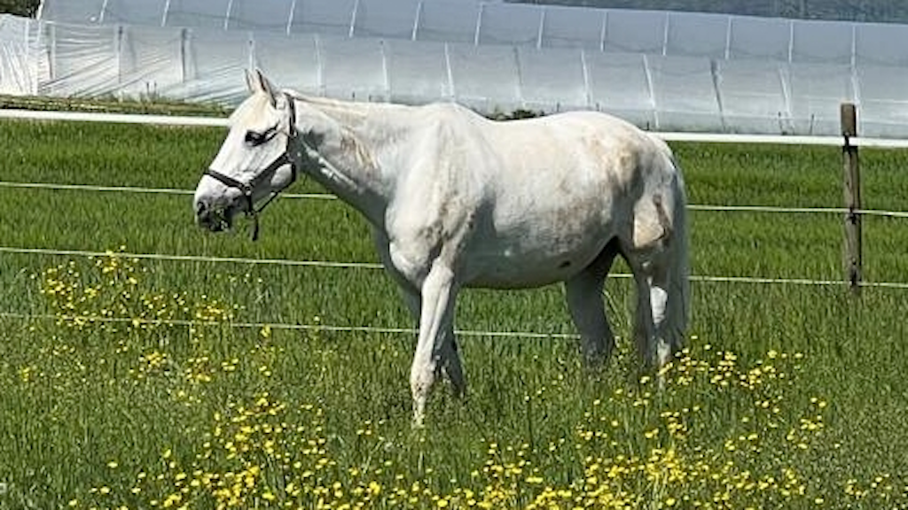

Observation 1
In image-to-video models, the image input primarily dictates the appearance of the generated videos.

|
||
| Input image | "A white horse walking" | "A pink horse walking" |
For example, I2VGen-XL generates a video of a predominantly white horse from a white horse image, even when the input text specifies the horse’s color as "pink."
Observation 2
In image-to-video models, text/image embeddings significantly influence the generated motions.
| CLIP embedding | ||||
|---|---|---|---|---|
| Real horse | Toy horse | |||
| Image latent | Real horse |
 |
||
| Toy horse |

|
|||
Swapping the CLIP image embeddings of a real horse and a toy horse in Stable Video Diffusion results in a swap of the motions in the output videos. This suggests that the real horse’s embedding encodes a walking motion, while the toy horse’s embedding encodes camera motion without object movement.
Method
The baseline image-to-video diffusion model, Stable Video Diffusion in our case, inputs the first frame in two places: as image (latent) concatenated with the noisy video and as image embedding (some other image-to-video diffusion models may input text embeddings here instead). We propose to replace the image embedding \(\mathbf{e}\) with a learned motion-text embedding \(\mathbf{m}^*\). The motion-text embedding is optimized directly with a regular diffusion model loss on one given motion reference video \(\mathbf{x}_0\) while keeping the diffusion model frozen.

Note that the diffusion process operates in latent space in practice, and other conditionings and model parameterizations are omitted for clarity.
For best results, the motion-text embedding is inflated prior to optimization to \((F+1) \times N\) tokens, where \(F\) is the number of frames and \(N\) is a hyperparameter, while keeping the embedding dimension \(d\) the same to stay compatible with the pre-trained diffusion model. For more details regarding the motion-text embedding and cross-attention inflation, please refer to the paper and supplementary material.
Qualitative Evaluation
We compare our method to SVD = Stable Video Diffusion (baseline, no motion input), VC = VideoComposer, MC = MotionClone, and MD = MotionDirector for various different motions and target images.
Our method is the only one that preserves the input image’s appearance and layout while successfully transferring the semantic motion of the video. For the quantitative evaluation, please refer to the paper and supplementary material.
Additional Results
Motion Style Transfer
Our learned motion-text embeddings do not only store the rough motion category but also the style of the motion.
| Motion reference videos | Generated videos | |||
Here, we apply two different gaits to the same target image: a horse trot (smooth) and a canter (rocking). The resulting videos for the cartoon dog are not only showing the dog moving, but their motions also closely match the motion reference video's gait style. Furthermore, the extreme cross-domain examples with the boat, car, and cereal box show that the essence of the motion style is preserved even across completely different objects.
Semantic Motion Transfer
Our learned motion-text embeddings store the semantic motion (animal moving in the direction it is facing and moving its head down) rather than the spatial motion (animal moving from right to left and left part is going down).
| Motion reference video | Generated video for regular horse image input | Generated video for flipped horse image input |
This can be seen in the above example where we apply the same learned motion-text embedding to a flipped input image, and our method produces semantically similar results.
Camera Motion Grid
Our learned motion-text embeddings handle camera motions robustly, enabling us to apply a given motion to various target images and various motions to a given target image.
| Motion reference videos | Generated videos | |||
Analysis
Motion Visualization
We generate videos using our optimized motion-text embedding for a "jumping jacks" motion (same reference as from ablation below) both with the image input (conditional) and without (unconditional) after a different number of optimization iterations.
| Iteration | 0 | 200 | 500 | 1000 | 2000 |
|---|---|---|---|---|---|
| Conditional | |||||
| Unconditional (motion visualization) seed 0 |
|||||
| Unconditional (motion visualization) seed 1 |
Note how the appearance of the unconditional generations differs from the motion reference video and varies with different seeds. Further observe that our method effectively generates similar semantic motions without needing or enforcing spatial alignment.
Ablation
Our proposed motion-text embedding inflation is crucial for successful motion transfer.
While adding more tokens (increasing \(N\)) improves the results already, the biggest gain comes from having different tokens for each frame (where \(F' = F+1 = 15\)).
Comparison to Stable Video Diffusion Baseline
We compare our method to Stable Video Diffusion (SVD) for multiple motions and seeds.
While SVD often fails to align with the motion reference and is highly influenced by the seed, our motion-text embedding guides the model to generate videos with matching motion, minimizing variations caused by the seed.
Failure cases
Our method is limited by the priors and quality of the pre-trained image-to-video model, which may lead to artifacts (e.g., identity changes as head moves in first example). Furthermore, there may be some structure leakage in some cases, leading to certain characteristics from the motion reference video being visible (e.g., human-like legs on a kangaroo in second example). Lastly, our method struggles to transfer spatially fine-grained motion at times (e.g., typing motion not transferred to dinosaurs in third example).
When the optimized motion-text embedding fails to accurately reconstruct the reference motion, the subsequent transfer to a new target typically fails as well.
| Motion reference video | Reconstruction given first frame of reference video | Transfer given target image |